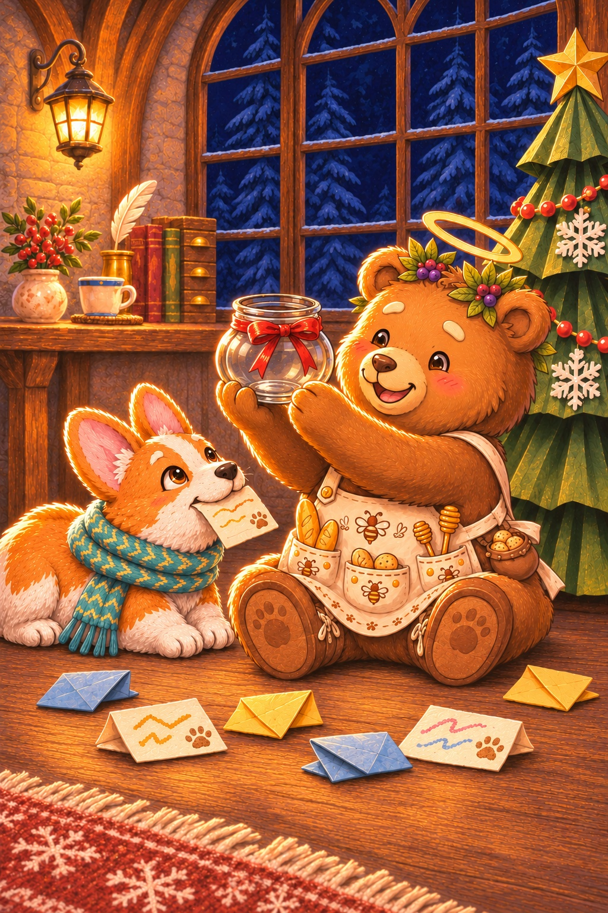

Reads › Holidays and events › New Year

New Year stories
Two woodland stories share one New Year’s Eve. Sort a year of memories with Ted, then follow the clock wall with Cluck and Coop.

Read them in order
Each story happens a little later in the season than the one before. Every book stands on its own, so start anywhere.

1 · New Year’s Eve, 6 to 9 pmTed-E-Bear and the Jar of Good Things
All year, Ted-E-Bear has dropped a folded note into a jar whenever something good happened. Tonight he plans to read the whole year out loud at the library party. Then the jar slips on the icy step, the notes scatter across the snow, and none of them has a date.
 2 · New Year’s Eve to New Year’s Day
2 · New Year’s Eve to New Year’s DayCluck O’Clock and the Midnight That Came Early
Cluck O’Clock is named after clocks, so this year he’s staying up for midnight. The real one. Then Professor Hooten shows the twins a wall of clocks, and midnight starts turning up all evening long.
Also good this season
- Pork-ulele and the Clockwork Concert · Ages 6–8 · 7 pages
- Nutmeg’s Four Seasons · Ages 5–8 · 4 pages
Every book is free to read online, read aloud with your device’s voice, save for offline or print as a PDF. They stay on the shelf all year.
Midnight around the world
Compare the times on Professor Hooten’s clock wall.
Your time
·
New Year!
Cairo
·
New Year!
Nairobi
·
New Year!
Dubai
·
New Year!
Kiritimati
·
New Year!
Printables
- Jar of Good Things activity sheet · 45 KB
- Colour Ted’s story · 3.2 MB
- Colour Cluck’s story · 3.0 MB